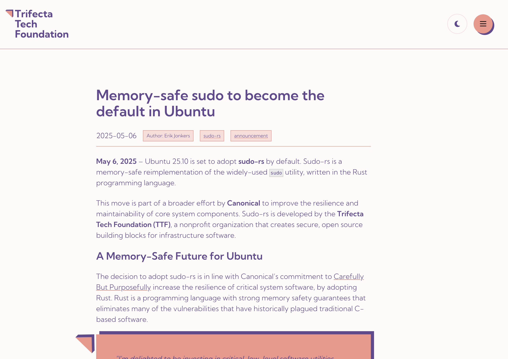

Ubuntu заменит sudo на sudo-rs

Читаю в очередной раз новости и вижу, что в Ubuntu всё также преследуют цель переехать на Rust просто ради Rust.
Никаких специфических деталей, почему это делают, как всегда нет. А вот абстрактных слов, конечно же, хватает. Закинули бы для приличия хоть пару критических CVE для sudo, которые пофиксил бы Rust.
Я не против Rust, а против переезда на незаконченное решение, которое ещё никто не обкатал.
Почему не взять doas? Он куда проще, чем sudo, кода значительно меньше. Doas уже обкатан в мирах BSD и Arch.
Эх. Ладно. Наверное, в этом и есть прелесть мира Linux. Творят, что хотят. Их право.